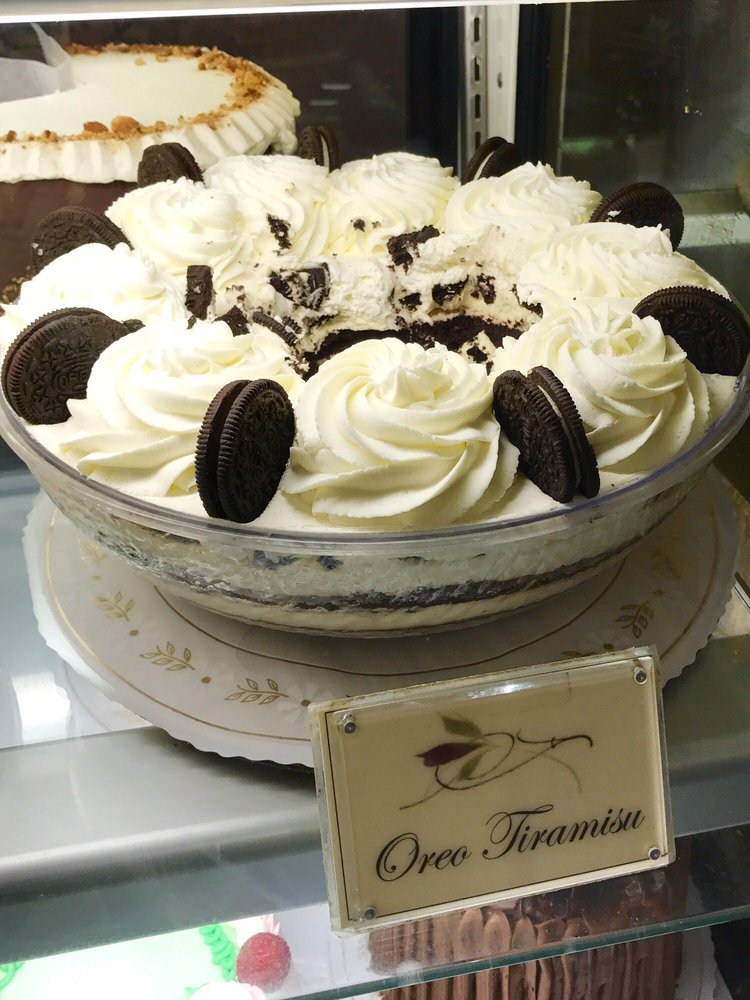

Oreo Tiramisu
Actual crack
Ingredients
- 8 oz container of mascarpone, room temperature
- 3 tbsp powdered sugar
- 2 1/2 cups heavy whipping cream
- 1/3 cup granulated sugar
- 1 tsp vanilla
- 4 oz semisweet chocolate chips
- 1 package of family-size Oreos
- Chocolate cake
Instructions
- Whisk mascarpone with powdered sugar until just combined.
- Add 1 cup whipping cream with mixer on low, then turn up to medium and whisk until mixture is thickened and soft peaks form, about 1-2 minutes. Put in fridge.
- In chilled mixing bowl, whip 1 1/4 cup whipping cream until it starts to thicken, then slowly add sugar and vanilla. Beat on high until soft-medium peaks form.
- Melt chocolate chips and remaining whipping cream in microwave on low.
- To assemble, repeat the following layers until you run out:
- Oreos
- Mascarpone
- Whipped cream
- Crumbled cake
- Ganache drizzles